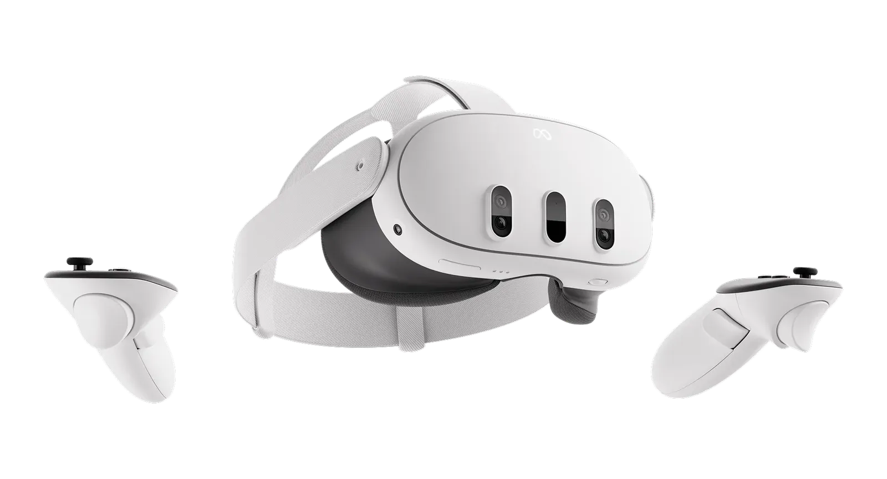
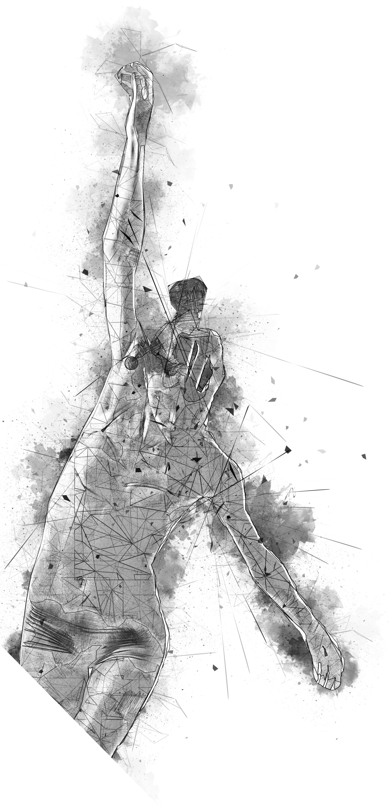

ABOUT
Where the Art of Science meets the Science of the Arts
Ensemble Nonlinear can be whatever you make it. Design your own instruments, networked audio systems and XR interfaces, and put them to work composing and performing music for the 21st Century.

New for Spring 2027, Ensemble Nonlinear will look to the current generation of XR headmounted displays as its primary research and performance environment with its own set of Meta Quest 3 head-mounted displays thanks to generous funding provided by the School of Humanities, Arts and Social Sciences (HASS).
DESIGN
Twenty-first-century artists deserve twenty-first-century tools. Revisit, challenge and extend traditional methods of creating and controlling sound and music by leveraging today's technology stacks. Ensemble Nonlinear serves as a built in focus-group for testing and iteration so you and your classmates can move fast and break things, or drill down to perfect something special. Code early and code often.
DEVELOP
Build and implement your ideas and test them across the ensemble. We're code-agnostic in Ensemble Nonlinear so bring your favorite language and software environments and we'll make them work together. Build music systems across a variety of hardware and software platforms including laptops, Raspberry Pi SBCs, game engines like Unity and Unreal Engine, mobile phones (iOS and Android) and XR headsets like the Meta Quest series of HMDs.
COMPOSE
Computer-generated sound and music is nearly 100 years old and musicians have traditionally led the way in the exploration of new technology systems for musical creation and performance. If you love to compose and create musical forms and functions, Ensemble Nonlinear allows you to work with new sounds and methods to control sound and music. Create scores for the ensemble and conduct your new works in class and in concert.
PERFORM
Whether you enjoy playing the bassoon or working the decks, there's no greater thrill than performing live music in front of an audience. Ensemble Nonlinear hosts two performances per semester, one focused on smaller solo and chamber-sized ensemble groupings, and one featuring the entire ensemble. Join us as we surround the audience in speakers and immerse the entire hall in multichannel live music.

FROM OUR DIRECTOR
The Message in the Machine
A few words from Dr. Rob Hamilton, founder and director of Ensemble Nonlinear.
Technology, like the air we breathe or the sounds that fill our ears, is a ubiquitous part of most of our 21st century lives. And to the joy of many - and to the chagrin of others - we as a society have never been closer to a world in which the technologies which we create can not only listen and respond, but can seem to possess their own unique voice.
Ensemble Nonlinear is an ecosystem where we're listening to those voices; interacting with them in real-time, guiding them to create sonic structure and experience, dare I say even, music.
For the 2027 season of Ensemble Nonlinear, RPI's Experiential Technology-based Music Ensemble, immersive Extended Reality (XR) is our focus. Students are exploring the affordances of networked XR systems as ways to compose and perform sound-based experiences, not just for one another, but for live audiences.
As we push forward into the second quarter of the 21st century, the paths ahead are clearly not straight and narrow, but broad and winding. Embrace the nonlinearity and see how your own research and creative visions can guide us further down the long winding roads.

MEDIA
Listen & Watch
In Ensemble Nonlinear, we examine traditional concepts around musical form and function and look to expand and recontextualize the ways we compose and perform sound-based works using contemporary technology platforms. At the heart of all Nonlinear performances is a networked data layer, sharing information from controllers and performers not only to an array of speakers, but to all the machines in the ensemble.
New technologies == new possibilities, and the ensemble is constantly evolving and experimenting with the latest and greatest software and hardware systems, all in an effort to better understand how and why we make music.
YOUR CHOICE
Undergraduate, Masters or Ph.D. Candidate, we've got an option for you
ARTS 2600
1 Credit
As a member of the ensemble, rehearse and perform using novel interfaces and systems designed by your classmates.
Anything more than that is up to you.
- No Prerequisites
- Perform with Meta Quest 3
- Electronic music of all shapes and sizes
- 1 Credit
- Learn and Play, that's all
ARTS 4600
4 Credit
Design, Develop and Compose new interfaces, instruments, systems and interactive musical works for the ensemble.
You make it, we'll play it.
- Meta Quest 3
- Build Procedural Audio and Music systems
- ChucK, Max/MSP, Unity, Unreal
- 4 Credits
- What can you build next?
ARTS 6600
4 Credit
Conduct your research, explore your practice and test out your theories with a team of RPI musicians and Engineers.
Bring your big ideas and put them to work.
- Help Define and Lead the Ensemble
- Research modalities of HCI and Digital Systems
- Conduct, Manage, Direct
- 4 Credits
- Where can you take us?